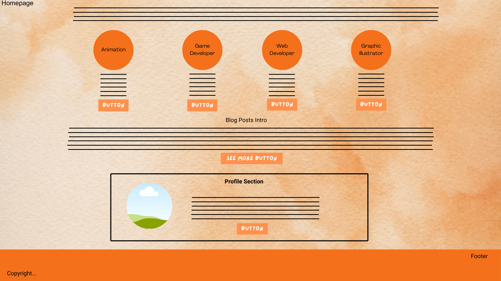
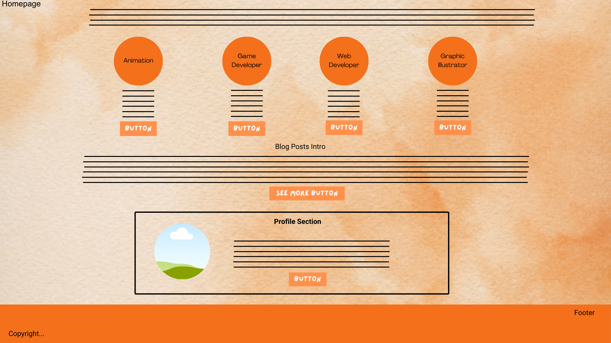

IxD process, reflection, planning & designing - Html
This document will explain the design process focusing on brainstorming and the thought process for the website. It will mention the main purpose of the site including the type of topics that will be discussed in the blog posts. It will outline the challenges along with solutions and the general learning phase of creating the website such as the coding experience and getting familiar with the entire process of web development.
First, I had to do research on Html. I started with getting familiar with Github, using visual code and making sure that my code is detected on the Github desktop app. When I finally saw that it worked, I would commit it and push to origin. During this process of changing and updating the code, I found that it was better to push to origin as the changes were made so that I am able to test the code and see if it worked on the actual website. Therefore, with every change…I went and checked the site. Checking the site on the Github website became tedious as takes too long to update so I found that I had better flow with the process of creating the site by rather checking any progress on the file that is saved in my file explorer. This is what I preferred and I saw my changes much quicker so I stopped relying on the github pages to see that. I also did not need to push to origin as much as before when starting out. I now only push when I feel I have completed the task.
When I started, I had trouble with creating the title of the website. It ended up working after some time and then I created my first paragraph. I was testing this out to see how paragraphs work. I did not like the way the wording was not contained and just went on continuously. I needed it to look like it is contained so that it looks more organized. That is when I had to introduce some styling especially to represent the wireframe designs. I saw that we were not supposed to use styling but I felt like I had to learn it now so that I can get used to using that technique earlier on along my web development journey since it is my preference. I wanted an intro-page (the index page which is supposed to be the homepage that I changed later) I have seen websites having their homepage with an introduction to what the purpose of the website is. I have based mine on animation since I am extremely passionate about it. At first, I wanted to focus on the entire industry as a whole, but found that I would be discussing way too much in the blogs. Generally, companies that have websites are usually niche-based. Maybe I can add other topics such as gaming/ web development later on, but I felt that it would be better to stick to a niche for now and see how I would make it work for the blog posts.
However, my profile will include my career. So, I intend on mentioning the other categories of my profession, then I’ll mention that I have chosen “animation” due to passion. For my profile image, I will have a graphic image of myself since it aligns with being a digital artist and it would make me feel pleased to have my own character. I will place this on the homepage so that viewers get to see the website and see the person behind it. Then I will have the portfolio with some graphic content, motion graphics, animations etc. I might include games. I will have some 3D assets as well. The contact page will have the phone number and email as well as a section for location. I’m not sure what the purpose of the contact section is for now since this is mainly a blog site so I do not know if I should encourage viewers to book me, making them customers instead, or to share feedback and comments. I might leave this part out later or I might choose to keep it once I have decided what to do.
The blog posts are a bit intimidating for me because I feel like you have to keep readers focused and engaged. Therefore, the blog posts have to be interesting with the correct wording and grammar. I decided that dividing the posts with any graphic images is best to keep viewers engaged and making the images represent or further explain the content. It must be relatable to the post. Having different topics for the blog posts is also important and that is where I feel it is a bit difficult to produce all kinds of topics under the category of animation. So far, I have been brainstorming and this is what I currently think I will be writing about:
- The history of Animation
- Animation in Africa
- 2D vs 3D animation
- Advantages & Disadvantages of being an Animator
- The truth about the industry
- Animation Studio scandals
Another issue I had was how long the blog posts should be. Is it supposed to be an entire page? Should I rather make it short so that I can divide one of the topics into sub-categories and have more to write about? I did not know what is ideal, but I decided to make mine short especially because of time limitation.
After making the decision on what type of website I want to create, the next step was the buttons. I did not care much about styling since it is not required at the moment. Having buttons to navigate to the other pages is important. I decided on:
- Homepage
- Blog Posts
- Portfolio
- Document
- Contact
- Essay
Learning how to create the buttons was interesting, I had to first create new files. I first saw this in class and was confused as to how I’ll create it. I figured it out eventually, did a bit of research as well then added the navigation buttons to the code. I was so impressed when I saw the buttons on the page, making me feel like the website is coming together. This is because all the websites we see have buttons at the top of the page. It feels like something that is mandatory. Without it, it looks like a plain page with no context. It is truly what we are used to seeing that it does not make sense to not have it.
The Blog posts took the longest to create and adding styling elements such as the container, sizing and padding really helped get the flow of creating the blogs. I just followed the same procedure for all the blog posts which is an heading and introduction and then the blogs be posted below under that specific topic. I have added the dates for each blog and made use of imagery to represent the discussions. I wish I could add more information in the blogs, some were not as informative as these were quick blogs that were made, but I feel there is room for improvement. I added links to the references for each blog and I found that it was challenging as some of the links did not work but I managed to copy links correctly so that it opens when clicked.
My portfolio section has the wireframes with containers for images that will be added in the future. I did not know what other wireframes to do because the homepage, blog & contact section are already complete and they are in wireframe containers. I might make some changes to the font and appearance. I would also like to add a linked arrow to extend the blogs at the end of each blog post. So that the blog posts appear in an organized fashion and making the user engage with the blogs just from seeing the title only. The copyright footer was added as a test to see how I can make it work in the future.For the semantic markup, I ensured that I made use of section and articles instead of div in my code. It is much better to use as I can easily customize the container, size, font, padding, colour and margin.The code is much more accessible and easier to understand this way.
Additional Research:
IxD process, reflection, planning & designing - Javascript
I discovered that I was wrong with adding styling in the beginning as it was not required. However, I used it to display my wireframe concepts. I discussed the reason for doing this in the previous document and have spoken to my lecturer to explain the reasons behind the decision. This time around, I have added my wireframe concepts that I struggled to add in the beginning. I have added more detail for the design of my pages and changed it from purple (shown in the blog posts for Week 2) to grayscale. I felt like it was better to have no colour added and just leave it as neutral. The wireframes will be posted again to show annotation and discuss my goal alignment.
Goal alignment & Reflection:
I changed all the buttons to include JavaScript functionality. My assessor stated that it okay to leave the profile on the homepage, so I left it as is. My portfolio section is displayed to have my games, animations, graphics, and 3D art be presented in an organized fashion by having them separated into 4 sections with empty containers. The empty containers will have my portfolio images, so I have left the portfolio page as is because it aligns with the goal that I have set out from the beginning. The contact page aligns with the goal as well. I did not adjust it because we are still at the beginning stages of creating this website. I will probably add some more styling in the next assignment, but I used a few tutorials and did some research on the contact page, so I think the template I have aligns with the goal. My essay section is more detailed as it is longer than the wireframe concept. I only designed the wireframes for the blog posts, documentation, and essay section to represent the theme and basic example of what the page will look like. Therefore, these pages just go into more detail with more information and images on the website, but still uses the basic template shown in the wireframes. My blog posts include the content I am supposed to engage with in the course, so it is not just limited to having my animation blog posts. It now includes the weekly readings and in-depth engagement with the course content. My opinions and what I am learning throughout web development have been added. I do quite a bit of research, not too much as there is never enough time to fully research when I have assignments and must educate myself on the programming aspect of creating the website.
Overall, my goal alignment is going well so far. I just must add the section that will indicate what page the user is on. I must create my logo for the website and add it to the header section. I must also add the images that will show each profession as well as buttons below to “learn more”. I am just not sure if I truly want buttons as I do not know what the functionality will be for each button. It is part of my wireframe, but I do not know where it should navigate to yet. I am thinking of making it redirect the user to the portfolio sections dedicated to each profession.
I have added some reflection to my goal alignments, but I want to go into more detail with how I have been feeling throughout this whole process. In the beginning I felt very happy with the website I created until I got my results, which made me think about dropping the whole course as I worked very hard on the first assignment. I started learning web development last year and have been gradually educating myself about it and programming on the side. However, I chose this major as a passion of mine and wanted to learn more on a professional level because there is a lot I still do not know. I learnt about the importance of semantic markup and metadata. Having the codes more organised is what I am learning as well. I would use images as links because I did not realise what the issue was when I used the images on my file explorer. The issue was that I did not create an images folder in my GitHub folder where the web content is located. I saw my assessor had this in their code but only implemented images on the final week of assignment 1 and decided to use my own method instead because I did not think it was mandatory. Learning the other method was more helpful as I could easily use the images correctly. Therefore, it helped with having my wireframes that I created be added to my website. I did not remove the styling I had because my assessor said I can leave them there. This made me very happy because removing them would complicate my process and my styling incorporates some wireframe concepts which adds to my goal alignment process. Therefore, it is great that it is there now so that I have a basic layout to work with for the CSS assignment. When I had the discussion with my assessor, it calmed me down as she said she will remark so that encouraged me to keep going.
However, I only started the JavaScript assignment on Wednesday evening as I was confused with what my assessor wanted from me because she did not give me feedback in the assignment portal and did not respond to my emails. I only got my feedback in person that day and it cleared up our misunderstandings which was extremely helpful. I carried on with the website that same day. Unfortunately, Thursday night my grandfather passed away and had to drop everything and rush to the hospital. I had to be with my family at my grandfather’s house the entire weekend. So, I was not home and could not work on my assignment the way I planned to. I had sent an email to ask for extra time, but I still submitted what I had as I got no response. This is such a difficult time for me as the death happened unexpectedly during my assignments. Leading to increased anxiety whilst grieving the loss of a family member. It was really challenging for me, and I don’t know if what I did is good enough. I am very sceptical, and it worries me a lot. For the JavaScript, I did not know what else to add and did not have enough time to add any more functionality, so I hope what I have is fine for now. I will add more later if I feel like it’s needed, but right now I think I will just work on it more after the funeral.
Design & Styling process:
For the styling, as I have stated before, I have my pages sectioned out into containers which aligns with the wireframe concepts. This makes my content more organized, but I feel like I will continue to organize it more when we do the CSS assignment. I tried my best to not add anything else. My design ideas for the buttons are either leave them as squares or have curved buttons. I would also like to change my font to something more playful and friendly as this is a portfolio website. I feel like there is no need to have my website looking very corporate and professional. I want it to look more relaxed and inviting as my career is very art related, so I want to have some colour. I know that brand consistency is important, so I will have the colour be the same throughout. I am thinking of using pastel pink, purple or yellow. I love gradient colours as well. Maybe I will have a gradient background colour to fit the colour theme for my website.
My blog posts will have a background colour in the containers that they are sectioned out in. I really love the light grey colour I have used now, because I noticed that when you mix colour behind images, it looks strange because the images may have different colours that do not blend. Therefore, the images might be in plain white containers or my background for the blog posts containers will be plain white, and the page background will have colour. I will test it out first because I feel like I will make up my mind after trial and error. My contact page will have more styling as I am thinking of having a border around the contact section. I will give it a background colour or a background image for the page. My document page and essay section might stay neutral because I must find out from my assessor if it needs styling or not. I do not know how much creative freedom I have because I learnt my lesson for the first assignment as I thought I had some creative freedom, but realized I don’t. I will check what is required for these pages first. My portfolio page will have a background colour, however the sections that will display my images will stay neutral. My logo design must align with the colour scheme of the website. So far, this is what I am planning for my design and styling. It is not confirmed for now as I am still in the planning stage.
Potential Styling Sketched Concepts
Concept01 - Orange
 

Concept02 - Blue
I have decided that the orange concept would be best as it aligns with the vibrant theme I would have wanted with the yellow. As I was designing the potential concepts I found that the yellow was not giving what I wanted to feel. Orange comes with more significance as the colour is associated with adventure, youth, warmth, and success. Customers respond to the color orange in many ways: they can perceive it as playful and friendly. However, if I change my mind during the CSS implementation then I would experiment with yellow as it conveys optimism, cheerfulness, joy, and in some cultures, prosperity, and royalty.Yellow is another attention-grabbing color; you can find it in traffic signs, bold advertisements, or toys. For other design-related purposes, yellow is a popular accent color, rather than the primary color, because it’s striking and tires the eye.
Rounded buttons use a border radius greater than zero, giving them a smoother shape and a less formal look. Different radii convey different personalities, with rounder ones being more playful. Additionally, round shapes feel safer and are more likable. Therefore, I have decided that using Rounded buttons will give my website a friendly appearance which plays into the feel of my career as I create games and animation. People enjoy playing games and watching animations to relax or enjoy the graphics and narrative. Adults may use it to connect with their inner child. A lot of people don’t see the behind the scenes of creating games and animations. They don’t get to see how challenging, difficult and serious it is to create these mediums. Most people do not know how they are created and this includes websites as well. Therefore, I choose to give into the illusion and appear the way that consumers percieve it by not taking it "too serious". So instead of using square buttons as it gives a more professional and modern feel, I will use rounded buttons instead. I think I will try to implement this in as many aspects as I can just to test this theory. For example, making my containers have curves by the edges and images be in round containers.
Inspiration from Portfolio Websites:
- Pascal Campion
- Bee Grandinetti
- Sagmeister & Walsh
- Miltonglaser
- Nikko Hurtado
- Loish
- fernandopeque
- Jordan Grimmer
Additonal Research:
- Color Psychology in UX Design
- Common UI Button Styles
- Button design: best practices and examples
- JavaScript Introduction
- JavaScript basics
- 100+ JavaScript Concepts you Need to Know
- JavaScript Tutorial for Beginners: Learn JavaScript in 1 Hour
- 7 JavaScript Concepts That Every Web Developer Should Know